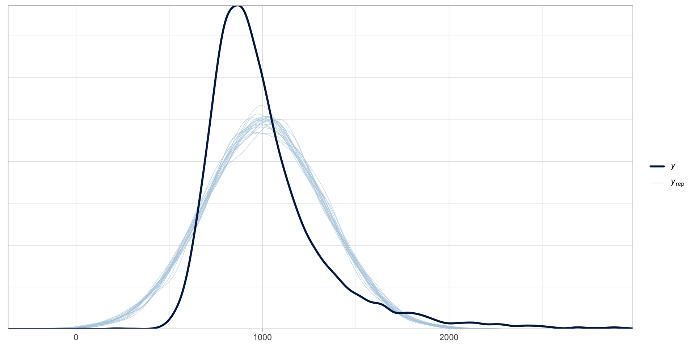

02 - Lognormal models
Is a Gaussian model a good choice?

Figure 1: Posterior predictive check plot of rt_gauss.
Gaussian variables are rare…
Reaction times can only be positive (negative values are excluded).
Variables that can take only positive numbers (and are continuous) usually follow a log-normal distribution.
The log-normal distribution

Figure 2: Log-normal distributions with varying mean and SD.
A log-normal model of RTs
\[ \begin{align} RT & \sim LogNormal(\mu, \sigma)\\ \end{align} \]
RT follow a log-normal distribution with mean \(\mu\) and standard deviation \(\sigma\).
\(\mu\) and \(sigma\) are the mean and SD of logged RTs.
equivalent to:
\[ \begin{align} log(RT) & \sim Gaussian(\mu, \sigma)\\ \end{align} \]
A log-normal model of RTs: code
A log-normal model of RTs: posterior predictive checks

Figure 3
A log-normal model of RTs: summary
Family: lognormal
Links: mu = identity; sigma = identity
Formula: RT ~ 1
Data: mald (Number of observations: 5000)
Draws: 4 chains, each with iter = 2000; warmup = 1000; thin = 1;
total post-warmup draws = 4000
Regression Coefficients:
Estimate Est.Error l-95% CI u-95% CI Rhat Bulk_ESS Tail_ESS
Intercept 6.88 0.00 6.87 6.88 1.00 3517 2562
Further Distributional Parameters:
Estimate Est.Error l-95% CI u-95% CI Rhat Bulk_ESS Tail_ESS
sigma 0.28 0.00 0.27 0.28 1.00 2245 2019
Draws were sampled using sampling(NUTS). For each parameter, Bulk_ESS
and Tail_ESS are effective sample size measures, and Rhat is the potential
scale reduction factor on split chains (at convergence, Rhat = 1).A log-normal model of RTs: MCMC draws
The MCMC draws are also called the posterior draws.
They allow us to construct the posterior probability distribution of each model parameter.
# A draws_df: 1000 iterations, 4 chains, and 5 variables
b_Intercept sigma Intercept lprior lp__
1 6.9 0.28 6.9 -3.2 -35094
2 6.9 0.28 6.9 -3.2 -35095
3 6.9 0.27 6.9 -3.1 -35094
4 6.9 0.28 6.9 -3.2 -35094
5 6.9 0.28 6.9 -3.2 -35093
6 6.9 0.28 6.9 -3.2 -35093
7 6.9 0.27 6.9 -3.1 -35095
8 6.9 0.28 6.9 -3.2 -35094
9 6.9 0.28 6.9 -3.2 -35094
10 6.9 0.28 6.9 -3.2 -35096
# ... with 3990 more draws
# ... hidden reserved variables {'.chain', '.iteration', '.draw'}Plot the MCMC draws: \(\mu\)

Figure 4: Posterior probability distribution of \(\mu\) of RTs.
Plot the MCMC draws: \(\mu\) (ms)

Figure 5: Posterior probability distribution of \(\mu\) of RTs in ms.
Summarise the MCMC draws: \(\mu\)
Summarise the MCMC draws: \(\mu\) (ms)
rt_logn_draws |>
summarise(
mu_mean = round(mean(exp(b_Intercept))),
mu_sd = round(sd(exp(b_Intercept)))
)# A tibble: 1 × 2
mu_mean mu_sd
<dbl> <dbl>
1 970 4The mean RTs is on average 970 ms (SD = 4).
Always conditional on the model and the data.
Credible Intervals
Uncertainty can be quantified with Bayesian Credible Intervals (CrIs).
A 95% CrI means that we can be 95% confident that the value is within the interval.
Frequentist Confidence Intervals are often wrongly interpreted as Bayesian Credible Intervals (Tan and Tan 2010; Foster 2014; Crooks, Bartel, and Alibali 2019; Gigerenzer, Krauss, and Vitouch 2004; Cassidy et al. 2019).
- There is nothing special about 95%. You should obtain several.
Credible Intervals: higher level = larger width

Figure 6: Several quantiles of a Gaussian distribution.
Calculate CrIs
library(posterior)
rt_logn_draws |>
mutate(
mu_ms = exp(b_Intercept)
) |>
summarise(
hi_95 = quantile2(mu_ms, probs = 0.025),
lo_95 = quantile2(mu_ms, probs = 0.975),
hi_80 = quantile2(mu_ms, probs = 0.1),
lo_80 = quantile2(mu_ms, probs = 0.9),
hi_60 = quantile2(mu_ms, probs = 0.2),
lo_60 = quantile2(mu_ms, probs = 0.8),
) |>
mutate(across(everything(), round))# A tibble: 1 × 6
hi_95 lo_95 hi_80 lo_80 hi_60 lo_60
<dbl> <dbl> <dbl> <dbl> <dbl> <dbl>
1 962 977 965 975 967 973Report
We fitted a Bayesian log-normal model of reaction times (RTs) with brms (Bürkner 2017) in R (R Core Team 2025).
According to the model, the mean RT is between 962 and 977 ms, at 95% confidence (in logged ms, \(\beta\) = 6.88, SD = 0.004). At 80% probability, the mean RT is 965-975 ms, while at 60% probability it is 967-973 ms.
Summary
Gaussian variables are rare.
Variables that are bounded to positive (real) numbers only usually follow a log-normal distribution. For example reaction times.
Log-normal models estimate the mean and standard deviation of log-normal variables.
\[ y \sim LogNormal(\mu, \sigma) \]